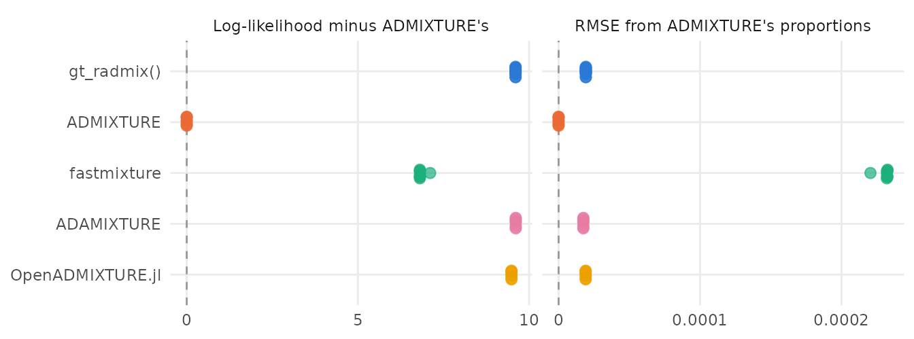
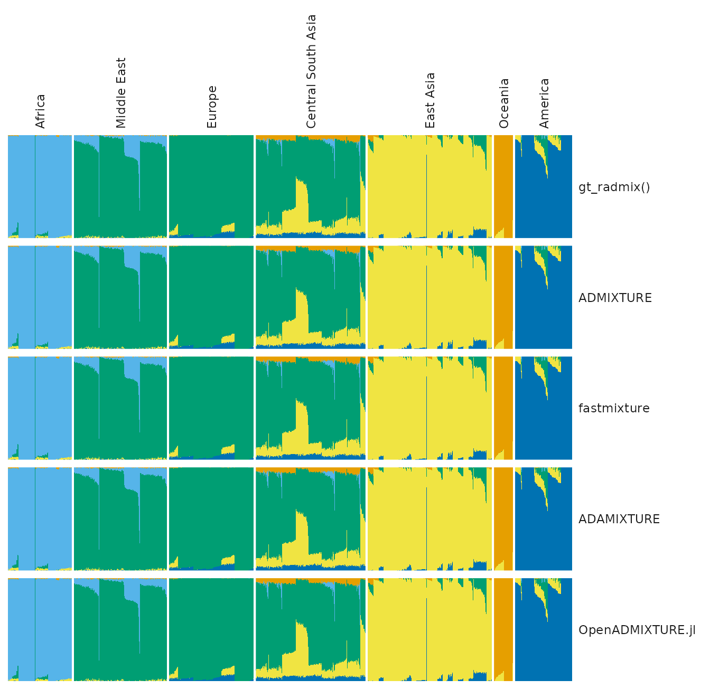
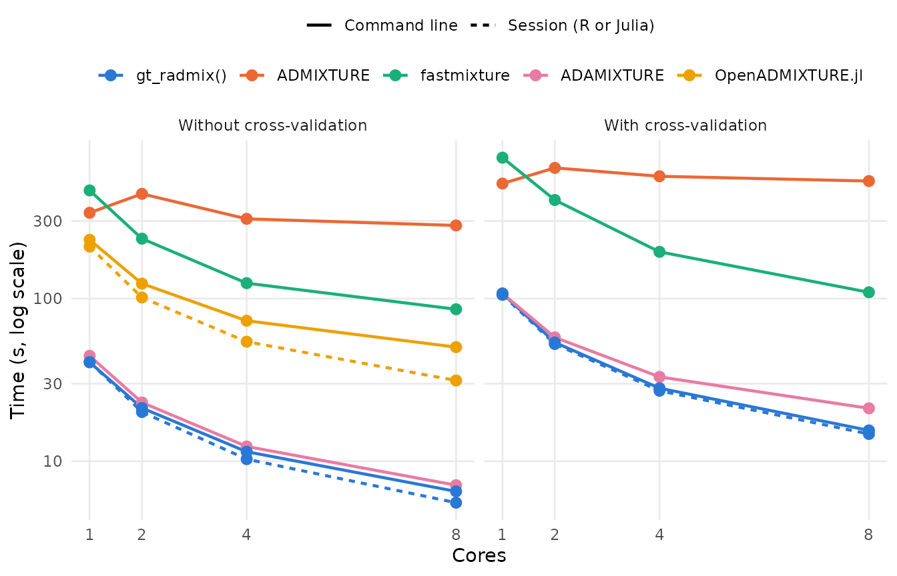
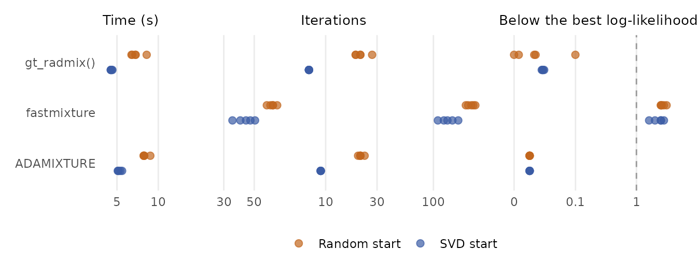

gt_radmix() estimates ancestry proportions with the
method of ADMIXTURE (Alexander et al. 2009), directly from the backing
file of a gen_tibble. It uses the algorithm of ADMIXTURE
(block-wise Newton updates with quasi-Newton acceleration), in
multithreaded C++, and the cross-validation of ADMIXTURE (Alexander and
Lange 2011).
This article compares gt_radmix() with four programs
that fit the same model: ADMIXTURE itself; OpenADMIXTURE.jl (Ko et
al. 2023), a Julia implementation of the algorithm of ADMIXTURE (run
without its selection of ancestry informative markers); fastmixture
(Santander et al. 2024), and ADAMIXTURE (Saurina-i-Ricos et al. 2026).
Note that OpenADMIXTURE.jl and ADAMIXTURE can also run on GPUs; this
comparison is limited to the CPU implementations of the programs, which
are all multithreaded. The actual speeds will depend on the exact set up
and operating system, so these values should be interpreted with caution
and only provide a general idea of the relative performance of the
programs.
The comparison uses the Human Genome Diversity Project (HGDP), and has two parts:
- Random starts: all the programs start from random values (ADMIXTURE and OpenADMIXTURE.jl have no other start, and fastmixture and ADAMIXTURE are run with their option to do so). This part checks that the programs find the same ancestry proportions, and measures how long each takes on different numbers of cores, with and without cross-validation (which OpenADMIXTURE.jl does not have).
-
SVD and random starts:
gt_radmix(), fastmixture and ADAMIXTURE can also start from a truncated singular value decomposition (SVD) of the genotypes, which is the default for fastmixture and ADAMIXTURE (gt_radmix()does so withinit = "svd"). Each of them is run from both starts, with several seeds, to compare their times and the log-likelihoods they reach.
We also compare the memory used by the programs, which is important
for large dataset. The other packages store the genotypes in a 2-bit
packed encoding, whilst gt_radmix() use a byte per genotype with memory
mapping, meaning that, whilst it uses more memory, it can also
effectively stream data when it runs out of memory. The section Data larger than the memory,
runs gt_radmix() alone on simulated data, with its memory
capped below their size, to show what working out of memory costs.
All the programs are timed from the command line, each run being a
new process that starts the program, reads the data and saves the
results. gt_radmix() is also timed in an R session, and
OpenADMIXTURE.jl in a Julia session, in which the package is already
loaded (see How long do they
take?).
The results come first. A final section, How the benchmark was run, describes the data and the runs, with their code, and how to run the benchmark again.
Results
Summary
The five programs estimated the ancestry proportions of 1,043 individuals of the HGDP, typed at 130,943 loci, for K = 5 ancestral populations (see The data). On this dataset:
- The same answer. All the programs reached very similar log-likelihoods and almost identical ancestry proportions (see Do the programs find the same ancestry proportions?).
-
gt_radmix()and ADAMIXTURE run at similar speeds, about 8 times faster than ADMIXTURE on 1 core and 40 times faster on 8 cores (see How long do they take?). fastmixture and OpenADMIXTURE.jl had intermediate speeds. -
SVD starts save time. Starting from an SVD of the
genotypes made
gt_radmix()and ADAMIXTURE about 1.5 times faster than starting from random values (about 5 s rather than 7-8 s on 8 cores), with the same results (see SVD and random starts). -
Memory. ADAMIXTURE and fastmixture used the least
memory, and OpenADMIXTURE.jl the most.
gt_radmix()used more than ADMIXTURE, because it keeps a byte per genotype, but it can fit data larger than the memory (see How much memory do they use?). -
Data larger than the memory.
gt_radmix()fitted 50 GB of simulated genotypes with its memory capped at 8 GiB, a sixth of the data, in about a third more time than in memory, with the same results (see Data larger than the memory).
Random starts
Do the programs find the same ancestry proportions?
All the programs maximise the same likelihood, but each starts from its own random values and stops by its own convergence criterion. Each run is compared with ADMIXTURE on 1 core without cross-validation, after matching its clusters to those of ADMIXTURE:

Each point is a run (on each number of cores, with and without
cross-validation, and, for gt_radmix() and
OpenADMIXTURE.jl, from the command line and in a session). All the runs
reached very similar log-likelihoods, with almost identical ancestry
proportions. ADMIXTURE stops a little earlier than the other programs,
so its log-likelihood is slightly lower (the detailed results give the numbers of each
run).
The ancestry proportions from each program (on 1 core, without
cross-validation, and in a session for gt_radmix() and
OpenADMIXTURE.jl), with the individuals grouped by region and
population:

How long do they take?
Each program is timed from the command line, as a new process that
starts the program, reads the bed file and writes Q and P (ADAMIXTURE
also always draws a plot, which is included in its time).
gt_radmix() and OpenADMIXTURE.jl are also timed in a
session, where R or Julia is already running with the package loaded
(and, for Julia, its code compiled); the time of
gt_radmix() includes reading the bed file into a
gen_tibble, which an analysis of several values of K would
only do once.

gt_radmix() and ADAMIXTURE were the fastest, with
similar times on every number of cores, with and without
cross-validation. fastmixture made good use of more cores, whereas
ADMIXTURE gained little from them. Starting R adds about a second to
each run of gt_radmix() from the command line, and starting
Julia and compiling OpenADMIXTURE.jl about 20 s to each of its runs (the
detailed results give the time of each
run).
Differences of a few percent between programs are not meaningful:
each run was done once, and the relative speeds depend on the machine,
the compiler and the libraries. For example, ADAMIXTURE computes its
main sums with an optimised BLAS library, which can use the wider vector
instructions of some servers (AVX-512) and the matrix units of Apple
processors, whereas gt_radmix() uses its own loops,
compiled for AVX2, and is multithreaded only where R supports OpenMP
(which the CRAN builds of R for macOS do not, without extra set-up).
How much memory do they use?
The peak resident memory of each run from the command line was
recorded with /usr/bin/time (see the detailed results). ADAMIXTURE, which keeps
the genotypes in a 2-bit packed encoding, used the least memory without
cross-validation, and fastmixture, whose memory does not grow with
cross-validation, the least with it. OpenADMIXTURE.jl, including Julia,
used the most. gt_radmix() used more than ADMIXTURE: it
reads the genotypes from the backing file of the
gen_tibble, a byte per genotype, which the system keeps in
memory when it fits, and streams it when it does not (see Data larger than the
memory).
Cross-validation errors
The cross-validation errors did not depend on the number of cores,
and those of gt_radmix(), ADMIXTURE and ADAMIXTURE were
almost the same (see the detailed
results). OpenADMIXTURE.jl has no cross-validation.
gt_radmix() and ADMIXTURE hold out a fold of the
genotypes, refit the model on the others, and average the deviance of
the held-out genotypes (Alexander and Lange 2011). They draw the folds
differently, so their errors are close but not identical. ADAMIXTURE
does the same, but refits each fold with only 5 iterations, starting
from the estimates on all the genotypes. fastmixture holds out
individuals rather than genotypes, and estimates their ancestry from the
same genotypes on which it then computes the error, so its errors can be
compared between values of K, but not with those of the other
programs.
SVD and random starts
gt_radmix(), fastmixture and ADAMIXTURE can start from a
truncated SVD of the genotypes, followed by alternating least squares
(ALS) on its factors, as well as from random values. fastmixture and
ADAMIXTURE start from the SVD by default, gt_radmix() from
random values (the SVD is an option, init = "svd"). Each of
the three programs was run from both starts with seeds 1 to 5, on 8
cores, without cross-validation, from the command line:

Each point is a run. The iterations count each program’s own steps, so they can only be compared between the two starts of a program. The right panel shows how far each run ended below the highest log-likelihood of the benchmark (the dashed line marks 1).
From an SVD, all three programs needed fewer iterations, and were
about 1.5 times faster than from random values. All the runs reached the
same optimum from both starts; fastmixture stops a little short of it,
by its own convergence criterion. The SVD of gt_radmix() is
computed by tidypopgen::gt_pca(), without imputing the
missing genotypes.
Data larger than the memory
gt_radmix() maps the backing file of the
gen_tibble into memory, so the system keeps as much of the
file in memory as it can and reads the rest from the disk. When the file
is larger than the memory available to R, gt_radmix()
streams it: each pass over the genotypes reads the file in chunks,
alternating its direction from one pass to the next, and asks the system
to read the next chunk while the current one is processed. The results
are identical to those of the same fit in memory.
To measure what this costs, gt_radmix() was run on
simulated genotypes of 50,000 individuals at 100,000 loci (5 GB in the
backing file), for K = 5 on 8 cores: in memory, and with its memory,
page cache included, capped at 4 GiB and 1 GiB, reading from the SSD of
the machine and from the same disk throttled to 500 and 150 MB/s, the
speeds of a slower SSD and of a hard disk (see How the benchmark was
run):
| Memory | Disk | Time (s) | Relative to in memory | Read (GB) | Peak memory (GB) | Of which R (GB) |
|---|---|---|---|---|---|---|
| no cap | (in memory) | 214 | 1.0 | 0 | 5.23 | 0.21 |
| 4 GiB | SSD | 277 | 1.3 | 238 | 4.29 | 0.21 |
| 1 GiB | SSD | 332 | 1.5 | 476 | 1.07 | 0.21 |
| 4 GiB | 500 MB/s | 547 | 2.6 | 225 | 4.29 | 0.21 |
| 1 GiB | 500 MB/s | 917 | 4.3 | 444 | 1.07 | 0.21 |
| 4 GiB | 150 MB/s | 1,648 | 7.7 | 237 | 4.29 | 0.21 |
| 1 GiB | 150 MB/s | 2,972 | 13.9 | 441 | 1.07 | 0.21 |
All the fits reached the same log-likelihood. On the SSD, the capped fits took only 1.3 to 1.5 times as long as the fit in memory. On slower disks, the time is set by how fast the data can be read: the fits took 2.5 to 4 times as long at 500 MB/s, and 8 to 14 times at 150 MB/s. R itself used only about 0.2 GB, leaving the rest of the cap to the page cache. The throttle limits the throughput of the disk, not its latency, so it mimics a slower disk only in part.
On a larger simulation, of 250,000 individuals at 200,000 loci (50 GB
in the backing file, and 12.5 GB even as a bed file),
gt_radmix() was run in memory and with its memory capped at
8 GiB, a sixth of the data:
| Memory | Disk | Time (s) | Relative to in memory | Read (GB) | Peak memory (GB) | Of which R (GB) |
|---|---|---|---|---|---|---|
| no cap | (in memory) | 1,711 | 1.0 | 0 | 50.42 | 0.4 |
| 8 GiB | SSD | 2,290 | 1.3 | 3,579 | 8.59 | 0.4 |
| 8 GiB | 500 MB/s | 7,330 | 4.3 | 3,532 | 8.59 | 0.4 |
The three fits reached the same log-likelihood. On the SSD, the capped fit took about a third longer than in memory (38 rather than 29 minutes); at 500 MB/s it took about 4 times as long, the time needed to read the data from the disk over and over.
Detailed results
Agreement between the programs (random starts)
| Program | Cores | CV | Log-likelihood | Difference | Largest difference (same program) | RMSE (ADMIXTURE) | Largest difference (ADMIXTURE) |
|---|---|---|---|---|---|---|---|
| gt_radmix() (command line) | 1 | no | -101,809,867.11 | 9.6 | 0 | 0.000019 | 0.00016 |
| gt_radmix() (command line) | 1 | yes | -101,809,867.11 | 9.6 | 0 | 0.000019 | 0.00016 |
| gt_radmix() (command line) | 2 | no | -101,809,867.11 | 9.6 | 0 | 0.000019 | 0.00016 |
| gt_radmix() (command line) | 2 | yes | -101,809,867.11 | 9.6 | 0 | 0.000019 | 0.00016 |
| gt_radmix() (command line) | 4 | no | -101,809,867.11 | 9.6 | 0 | 0.000019 | 0.00016 |
| gt_radmix() (command line) | 4 | yes | -101,809,867.11 | 9.6 | 0 | 0.000019 | 0.00016 |
| gt_radmix() (command line) | 8 | no | -101,809,867.11 | 9.6 | 0 | 0.000019 | 0.00016 |
| gt_radmix() (command line) | 8 | yes | -101,809,867.11 | 9.6 | 0 | 0.000019 | 0.00016 |
| gt_radmix() (R session) | 1 | no | -101,809,867.11 | 9.6 | 0 | 0.000019 | 0.00016 |
| gt_radmix() (R session) | 1 | yes | -101,809,867.11 | 9.6 | 0 | 0.000019 | 0.00016 |
| gt_radmix() (R session) | 2 | no | -101,809,867.11 | 9.6 | 0 | 0.000019 | 0.00016 |
| gt_radmix() (R session) | 2 | yes | -101,809,867.11 | 9.6 | 0 | 0.000019 | 0.00016 |
| gt_radmix() (R session) | 4 | no | -101,809,867.11 | 9.6 | 0 | 0.000019 | 0.00016 |
| gt_radmix() (R session) | 4 | yes | -101,809,867.11 | 9.6 | 0 | 0.000019 | 0.00016 |
| gt_radmix() (R session) | 8 | no | -101,809,867.11 | 9.6 | 0 | 0.000019 | 0.00016 |
| gt_radmix() (R session) | 8 | yes | -101,809,867.11 | 9.6 | 0 | 0.000019 | 0.00016 |
| ADMIXTURE | 1 | no | -101,809,876.71 | 0 | 0 | 0 | 0 |
| ADMIXTURE | 1 | yes | -101,809,876.71 | 0 | 0 | 0 | 0 |
| ADMIXTURE | 2 | no | -101,809,876.71 | 0.000001 | 0 | 0 | 0 |
| ADMIXTURE | 2 | yes | -101,809,876.71 | 0.000077 | 0.000001 | 0.000000014 | 0.000001 |
| ADMIXTURE | 4 | no | -101,809,876.71 | 0.000004 | 0 | 0 | 0 |
| ADMIXTURE | 4 | yes | -101,809,876.71 | 0.000004 | 0 | 0 | 0 |
| ADMIXTURE | 8 | no | -101,809,876.71 | 0.000004 | 0 | 0 | 0 |
| ADMIXTURE | 8 | yes | -101,809,876.71 | 0.000002 | 0 | 0 | 0 |
| fastmixture | 1 | no | -101,809,869.90 | 6.8 | 0 | 0.00023 | 0.0023 |
| fastmixture | 1 | yes | -101,809,869.90 | 6.8 | 0 | 0.00023 | 0.0023 |
| fastmixture | 2 | no | -101,809,869.90 | 6.8 | 0.000005 | 0.00023 | 0.0023 |
| fastmixture | 2 | yes | -101,809,869.90 | 6.8 | 0.000008 | 0.00023 | 0.0023 |
| fastmixture | 4 | no | -101,809,869.90 | 6.8 | 0.00001 | 0.00023 | 0.0023 |
| fastmixture | 4 | yes | -101,809,869.90 | 6.8 | 0.000002 | 0.00023 | 0.0023 |
| fastmixture | 8 | no | -101,809,869.90 | 6.8 | 0.000009 | 0.00023 | 0.0023 |
| fastmixture | 8 | yes | -101,809,869.60 | 7.1 | 0.0002 | 0.00022 | 0.0023 |
| ADAMIXTURE | 1 | no | -101,809,867.10 | 9.6 | 0 | 0.000017 | 0.00021 |
| ADAMIXTURE | 1 | yes | -101,809,867.10 | 9.6 | 0 | 0.000017 | 0.00021 |
| ADAMIXTURE | 2 | no | -101,809,867.10 | 9.6 | 0 | 0.000017 | 0.00021 |
| ADAMIXTURE | 2 | yes | -101,809,867.10 | 9.6 | 0 | 0.000017 | 0.00021 |
| ADAMIXTURE | 4 | no | -101,809,867.10 | 9.6 | 0 | 0.000017 | 0.00021 |
| ADAMIXTURE | 4 | yes | -101,809,867.10 | 9.6 | 0 | 0.000017 | 0.00021 |
| ADAMIXTURE | 8 | no | -101,809,867.10 | 9.6 | 0 | 0.000017 | 0.00021 |
| ADAMIXTURE | 8 | yes | -101,809,867.10 | 9.6 | 0 | 0.000017 | 0.00021 |
| OpenADMIXTURE.jl (command line) | 1 | no | -101,809,867.22 | 9.5 | 0 | 0.000019 | 0.00013 |
| OpenADMIXTURE.jl (command line) | 2 | no | -101,809,867.22 | 9.5 | 0 | 0.000019 | 0.00013 |
| OpenADMIXTURE.jl (command line) | 4 | no | -101,809,867.22 | 9.5 | 0 | 0.000019 | 0.00013 |
| OpenADMIXTURE.jl (command line) | 8 | no | -101,809,867.22 | 9.5 | 0 | 0.000019 | 0.00013 |
| OpenADMIXTURE.jl (Julia session) | 1 | no | -101,809,867.22 | 9.5 | 0 | 0.000019 | 0.00013 |
| OpenADMIXTURE.jl (Julia session) | 2 | no | -101,809,867.22 | 9.5 | 0 | 0.000019 | 0.00013 |
| OpenADMIXTURE.jl (Julia session) | 4 | no | -101,809,867.22 | 9.5 | 0 | 0.000019 | 0.00013 |
| OpenADMIXTURE.jl (Julia session) | 8 | no | -101,809,867.22 | 9.5 | 0 | 0.000019 | 0.00013 |
Times (random starts)
| Program | Cores | Time (s) | Speed-up | Memory (MB) | Time with CV (s) | Speed-up with CV | Memory with CV (MB) |
|---|---|---|---|---|---|---|---|
| gt_radmix() (command line) | 1 | 40.6 | 1.0 | 560 | 108 | 1.0 | 620 |
| gt_radmix() (command line) | 2 | 21.3 | 1.9 | 560 | 53.8 | 2.0 | 620 |
| gt_radmix() (command line) | 4 | 11.4 | 3.5 | 560 | 28.1 | 3.8 | 620 |
| gt_radmix() (command line) | 8 | 6.53 | 6.2 | 560 | 15.5 | 6.9 | 620 |
| gt_radmix() (R session) | 1 | 40.7 | 1.0 | - | 105 | 1.0 | - |
| gt_radmix() (R session) | 2 | 20.1 | 2.0 | - | 52.6 | 2.0 | - |
| gt_radmix() (R session) | 4 | 10.3 | 4.0 | - | 27.1 | 3.9 | - |
| gt_radmix() (R session) | 8 | 5.56 | 7.3 | - | 14.7 | 7.2 | - |
| ADMIXTURE | 1 | 337 | 1.0 | 280 | 510 | 1.0 | 420 |
| ADMIXTURE | 2 | 440 | 0.8 | 280 | 636 | 0.8 | 420 |
| ADMIXTURE | 4 | 309 | 1.1 | 280 | 565 | 0.9 | 420 |
| ADMIXTURE | 8 | 282 | 1.2 | 280 | 528 | 1.0 | 420 |
| fastmixture | 1 | 462 | 1.0 | 200 | 735 | 1.0 | 200 |
| fastmixture | 2 | 234 | 2.0 | 200 | 404 | 1.8 | 200 |
| fastmixture | 4 | 124 | 3.7 | 200 | 194 | 3.8 | 200 |
| fastmixture | 8 | 86 | 5.4 | 200 | 109 | 6.7 | 200 |
| ADAMIXTURE | 1 | 44.5 | 1.0 | 150 | 108 | 1.0 | 910 |
| ADAMIXTURE | 2 | 23 | 1.9 | 160 | 57.8 | 1.9 | 920 |
| ADAMIXTURE | 4 | 12.3 | 3.6 | 170 | 33 | 3.3 | 930 |
| ADAMIXTURE | 8 | 7.13 | 6.2 | 180 | 21.2 | 5.1 | 930 |
| OpenADMIXTURE.jl (command line) | 1 | 230 | 1.0 | 1,600 | - | - | - |
| OpenADMIXTURE.jl (command line) | 2 | 124 | 1.9 | 1,160 | - | - | - |
| OpenADMIXTURE.jl (command line) | 4 | 73.1 | 3.1 | 1,160 | - | - | - |
| OpenADMIXTURE.jl (command line) | 8 | 50.3 | 4.6 | 1,270 | - | - | - |
| OpenADMIXTURE.jl (Julia session) | 1 | 209 | 1.0 | 1,600 | - | - | - |
| OpenADMIXTURE.jl (Julia session) | 2 | 102 | 2.1 | 1,170 | - | - | - |
| OpenADMIXTURE.jl (Julia session) | 4 | 54.3 | 3.8 | 1,150 | - | - | - |
| OpenADMIXTURE.jl (Julia session) | 8 | 31.4 | 6.7 | 1,160 | - | - | - |
Cross-validation errors (random starts)
| Program | 1 core | 2 cores | 4 cores | 8 cores |
|---|---|---|---|---|
| gt_radmix() (command line) | 0.42239 | 0.42239 | 0.42239 | 0.42239 |
| gt_radmix() (R session) | 0.42239 | 0.42239 | 0.42239 | 0.42239 |
| ADMIXTURE | 0.42242 | 0.42242 | 0.42242 | 0.42242 |
| fastmixture | 0.42191 | 0.42191 | 0.42191 | 0.42191 |
| ADAMIXTURE | 0.42240 | 0.42240 | 0.42240 | 0.42240 |
Random and SVD starts
| Program | Start | Time (s) | Iterations | Memory (MB) | At the best | Largest shortfall | Largest difference between runs | RMSE (ADMIXTURE) |
|---|---|---|---|---|---|---|---|---|
| gt_radmix() | Random | 6.8 (6.38-8.23) | 21 | 560 | 5 of 5 | 0.1 | 0.00044 | 0.000019 |
| gt_radmix() | SVD | 4.52 (4.5-4.63) | 7 | 690 | 5 of 5 | 0.028 | 0.000035 | 0.000023 |
| fastmixture | Random | 68.2 (61.8-73.4) | 225 | 200 | 0 of 5 | 3.1 | 0.0017 | 0.00023 |
| fastmixture | SVD | 43.5 (34.7-50.7) | 135 | 220 | 0 of 5 | 2.8 | 0.0014 | 0.00021 |
| ADAMIXTURE | Random | 7.89 (7.82-8.75) | 21 | 180 | 5 of 5 | 0.012 | 0.00032 | 0.000011 |
| ADAMIXTURE | SVD | 5.16 (5.07-5.45) | 9 | 200 | 5 of 5 | 0.012 | 0.00025 | 0.0000091 |
How the benchmark was run
The benchmark is run with scripts in
vignettes/articles/code (in the source code of the
package). The first prepares the data. The second runs the programs from
the command line: ADMIXTURE, fastmixture, ADAMIXTURE, and
gt_radmix() and OpenADMIXTURE.jl with two more scripts,
which Rscript and julia run. The last runs
gt_radmix() in an R session. The results are read here from
vignettes/articles/data/admixture_benchmark. Each run is
done once, as the full runs take long enough for the variation between
repeated runs to be small. The code shown below is taken from these
scripts. Timings depend on the machine (see Machine and software), the compiler and
the libraries: large differences between the programs should hold on
other machines, but small ones need not (see How long do they take?).
The data
The data are those of the HGDP used in the benchmark of
tidypopgen (1043 individuals typed at about 650,000 loci),
downloaded from Zenodo:
# the HGDP data (1043 individuals typed at about 650k loci) and the
# population of each individual, as used in the benchmark of tidypopgen.
# Each file is downloaded under a temporary name, so that an interrupted
# download is not mistaken for a complete file when the script is run again
zenodo_url <- "https://zenodo.org/records/15582364/files/"
hgdp_files <- c(
"hgdp650.qc.hg19.bed", "hgdp650.qc.hg19.bim", "hgdp650.qc.hg19.fam",
"hgdp650_id_pop.txt"
)
options(timeout = max(3600, getOption("timeout")))
for (file in hgdp_files) {
path <- file.path(hgdp_dir, file)
if (!file.exists(path)) {
download.file(paste0(zenodo_url, file), paste0(path, ".part"), mode = "wb")
file.rename(paste0(path, ".part"), path)
}
}and prepared as recommended in the manual of ADMIXTURE. The steps are
the same as in the analyses of the HGDP with
tidygenclust:
library(tidypopgen)
hgdp <- gen_tibble(
file.path(hgdp_dir, "hgdp650.qc.hg19.bed"),
backingfile = file.path(gt_dir, "hgdp_raw"),
quiet = TRUE
)
# loci with less than 5% of missing genotypes, as recommended in the manual
# of ADMIXTURE, and polymorphic (fastmixture stops on monomorphic loci)
hgdp <- hgdp |>
select_loci_if(loci_missingness(genotypes) < 0.05) |>
select_loci_if(loci_maf(genotypes) > 0)
# LD clumping with the thresholds of the manual of ADMIXTURE (plink
# --indep-pairwise 50 10 0.1). Clumping needs complete genotypes, so the
# missing ones are imputed first (on a backing file with only the loci kept
# above). loci_ld_clump() uses the imputed genotypes, but the gen_tibble
# keeps using the raw ones, which are those written to the bed file below:
# missing genotypes remain missing for all the tools
hgdp <- gt_update_backingfile(
hgdp,
backingfile = file.path(gt_dir, "hgdp_filtered"),
quiet = TRUE
)
set.seed(1)
hgdp <- gt_impute_simple(hgdp, method = "random")
hgdp <- hgdp |>
select_loci_if(
loci_ld_clump(genotypes, thr_r2 = 0.1, size = 50, use_positions = FALSE)
)
gt_as_plink(hgdp, file = file.path(hgdp_dir, "hgdp_bench.bed"))All the programs are run on this bed file. A small subset of it is also saved, to check the scripts quickly (see Running the benchmark again):
# a small subset to check the benchmark scripts (on which ADMIXTURE takes
# about 30 s on one core): every 5th individual, and 25,000 of the loci that
# are still polymorphic among them
hgdp_quick <- hgdp[seq(1, nrow(hgdp), by = 5), ] |>
select_loci_if(loci_maf(genotypes) > 0)
n_loci <- count_loci(hgdp_quick)
set.seed(2)
quick_loci <- seq_len(n_loci) %in% sample(n_loci, min(25000, n_loci))
hgdp_quick <- select_loci_if(hgdp_quick, quick_loci)
gt_as_plink(hgdp_quick, file = file.path(hgdp_dir, "hgdp_bench_quick.bed"))Running the programs from the command line
All the programs are run from the command line with the same settings:
# the same settings as in admixture_benchmark_radmix.R
k=5
seed=1
n_folds=5
cores=(1 2 4 8)
# the comparison of the starts: these seeds, on the largest number of cores,
# without cross-validation
start_seeds=(1 2 3 4 5)Each program is run on 1, 2, 4 and 8 cores (with -j in
ADMIXTURE, --threads in fastmixture, -t and
OMP_NUM_THREADS in ADAMIXTURE, n_cores in
gt_radmix() and the number of threads of Julia for
OpenADMIXTURE.jl), with and without cross-validation (with
--cv in ADMIXTURE, fastmixture and ADAMIXTURE, and
crossval in gt_radmix(); OpenADMIXTURE.jl has
none), from random values or from an SVD of the genotypes (with
--random-init in fastmixture, --init random or
--init svd in ADAMIXTURE, and init in
gt_radmix()), with these functions:
# the wall-clock time, in seconds (GNU date on Linux, python fallback on macOS)
now() {
local t
t=$(date +%s.%N 2>/dev/null || true)
if [[ "$t" == *.* && "$t" != *N* ]]; then
echo "$t"
else
python3 -c 'import time; print(f"{time.time():.6f}")'
fi
}
# run a command redirecting its stdout+stderr to $2, and record peak RSS in $1
# using GNU /usr/bin/time -v (Linux) or BSD /usr/bin/time -l (macOS)
timed_exec() {
local time_log=$1 out_log=$2
shift 2
if /usr/bin/time -v true >/dev/null 2>&1; then
/usr/bin/time -v -o "$time_log" -- "$@" > "$out_log" 2>&1
elif /usr/bin/time -l true >/dev/null 2>&1; then
/usr/bin/time -l sh -c 'exec "$@" > "$0" 2>&1' "$out_log" "$@" 2> "$time_log"
else
: > "$time_log"
"$@" > "$out_log" 2>&1
fi
}
# peak resident set size in MiB from the log written by timed_exec(), or NA
extract_peak_rss_mb() {
local time_log=$1 rss
if [[ ! -s "$time_log" ]]; then
echo "NA"
return
fi
rss=$(awk '/Maximum resident set size \(kbytes\)/ { printf "%.1f", $NF / 1024; exit }' "$time_log")
if [[ -z "$rss" ]]; then
rss=$(awk '/maximum resident set size/ { printf "%.1f", $1 / 1048576; exit }' "$time_log")
fi
echo "${rss:-NA}"
}
# the first match of a regular expression (with one group, which is
# returned) at the start of a line of a log, or NA if there is none
extract() {
local value
value=$(sed -n -E "s/$1/\1/p" "$2" | head -n 1)
echo "${value:-NA}"
}
# Each program is run by a function run_<program> <cores> <cross-validation
# (TRUE or FALSE)> <run directory> <seed> <start (random or svd)>.
# ADMIXTURE writes its output in the current directory, named after the bed
# file (e.g. hgdp_bench.5.Q), so it is run from the directory of the run;
# its log is what it prints. It starts from random values
run_admixture() {
local n_cores=$1 crossval=$2 run_dir=$3 seed=$4
local bed_path=$PWD/$bed
local time_log=$PWD/$run_dir/time.log
local args=(-s "$seed" -j"$n_cores")
if [[ $crossval == TRUE ]]; then
args+=(--cv="$n_folds")
fi
(cd "$run_dir" && timed_exec "$time_log" admixture.log "$admixture" "${args[@]}" "$bed_path" "$k")
}
# fastmixture writes its output (Q, P and a log with its settings and
# results) with the prefix given by --out, and prints its progress. It
# starts from an SVD of the genotypes, or from random values with
# --random-init
run_fastmixture() {
local n_cores=$1 crossval=$2 run_dir=$3 seed=$4 init=$5
local args=(
--bfile "${bed%.bed}" --K "$k" --threads "$n_cores" --seed "$seed"
--out "$run_dir/fastmixture"
)
if [[ $crossval == TRUE ]]; then
args+=(--cv "$n_folds")
fi
if [[ $init == random ]]; then
args+=(--random-init)
fi
timed_exec "$run_dir/time.log" "$run_dir/console.log" "$fastmixture" "${args[@]}"
}
# ADAMIXTURE writes its output (Q, P and a plot) in --save_dir, named after
# --name and K (e.g. adamixture.5.Q), and prints its progress. We pass
# --chrom_mode all explicitly and set OMP_NUM_THREADS before starting it so
# its OpenMP thread pool matches n_cores. In ADAMIXTURE >= 1.9, it starts
# from an SVD of the genotypes followed by alternating least squares
# (--init svd, its default), or from random values primed with EM steps
# (--init random)
run_adamixture() {
local n_cores=$1 crossval=$2 run_dir=$3 seed=$4 init=$5
local args=(
--data_path "$bed" --save_dir "$run_dir" --name adamixture -k "$k"
-t "$n_cores" -s "$seed" --chrom_mode all --device cpu --init "$init"
)
if [[ $crossval == TRUE ]]; then
args+=(--cv "$n_folds")
fi
timed_exec "$run_dir/time.log" "$run_dir/console.log" \
env OMP_NUM_THREADS="$n_cores" "$adamixture" "${args[@]}"
}
# gt_radmix() is run by a new R process, which loads tidygenclust, reads the
# bed file into a gen_tibble, runs gt_radmix() (from random values, its
# default, or with init = "svd"), saves the results, and prints the
# log-likelihood and cross-validation error
run_radmix_cli() {
local n_cores=$1 crossval=$2 run_dir=$3 seed=$4 init=$5
timed_exec "$run_dir/time.log" "$run_dir/console.log" \
"$rscript" code/admixture_benchmark_radmix_cli.R "$bed" "$k" "$seed" \
"$n_cores" "$crossval" "$n_folds" "$run_dir" "$init"
}
# julia, with the variables that activating its conda environment would
# set, so that it finds the packages installed in it (without the time
# taken by conda run)
julia_run() {
env JULIA_DEPOT_PATH="$julia_prefix/share/julia:" \
JULIA_PROJECT="@$julia_env" JULIA_LOAD_PATH="@:@$julia_env:@stdlib" \
"$julia_prefix/bin/julia" "$@"
}
# OpenADMIXTURE.jl is run by a new Julia process, which writes Q and P with
# the prefix openadmixture, and prints its progress, the log-likelihood and
# the time of the fit (Julia is started without an interactive thread, see
# admixture_benchmark_openadmixture.jl); it starts from random values, and
# has no cross-validation
run_openadmixture_cli() {
local n_cores=$1 run_dir=$3 seed=$4
timed_exec "$run_dir/time.log" "$run_dir/console.log" \
env JULIA_DEPOT_PATH="$julia_prefix/share/julia:" \
JULIA_PROJECT="@$julia_env" JULIA_LOAD_PATH="@:@$julia_env:@stdlib" \
"$julia_prefix/bin/julia" --threads="$n_cores,0" \
code/admixture_benchmark_openadmixture.jl \
"$bed" "$k" "$seed" "$run_dir/openadmixture"
}
# the same, after a warm-up on the small subset of the data, so that the
# fit, timed in Julia, does not include compiling the code
run_openadmixture() {
local n_cores=$1 run_dir=$3 seed=$4
timed_exec "$run_dir/time.log" "$run_dir/console.log" \
env JULIA_DEPOT_PATH="$julia_prefix/share/julia:" \
JULIA_PROJECT="@$julia_env" JULIA_LOAD_PATH="@:@$julia_env:@stdlib" \
"$julia_prefix/bin/julia" --threads="$n_cores,0" \
code/admixture_benchmark_openadmixture.jl \
"$bed" "$k" "$seed" "$run_dir/openadmixture" "$warmup_bed"
}and the time, Q matrix, log-likelihood, cross-validation error and number of iterations of each run are saved:
# each run is done in its own directory, and its time includes starting the
# program, reading the data and saving the results. Its Q matrix and log are
# then copied to the results, and its time, log-likelihood, cross-validation
# error and number of iterations (extracted from its log) are added to a
# table (csv file)
run_and_record() {
local tool=$1 n_cores=$2 crossval=$3 seed=$4 init=$5 run=$6 table=$7
local run_dir=$runs_dir/$run start seconds q_file log_file loglik cv_error
local iterations iterations_pattern='^Converged in ([0-9]+) iterations.*'
rm -rf "$run_dir"
mkdir -p "$run_dir"
echo "Running $run"
start=$(now)
"run_$tool" "$n_cores" "$crossval" "$run_dir" "$seed" "$init"
seconds=$(awk -v start="$start" -v end="$(now)" \
'BEGIN { printf "%.3f", end - start }')
case $tool in
admixture)
q_file=$run_dir/$(basename "$bed" .bed).$k.Q
log_file=$run_dir/admixture.log
loglik=$(extract '^Loglikelihood: ([^[:space:]]+).*' "$log_file")
cv_error=$(extract \
'^CV error \(K=[0-9]+\): ([^[:space:]]+).*' "$log_file")
;;
fastmixture)
q_file=$run_dir/fastmixture.K$k.s$seed.Q
log_file=$run_dir/fastmixture.K$k.s$seed.log
loglik=$(extract \
'^Final log-likelihood: ([^[:space:]]+).*' "$log_file")
cv_error=$(extract \
'^Cross-validation error \(SD\): ([^[:space:]]+).*' "$log_file")
;;
adamixture)
q_file=$run_dir/adamixture.$k.Q
log_file=$run_dir/console.log
loglik=$(extract \
'^ *Final log-likelihood: ([^[:space:]]+).*' "$log_file")
cv_error=$(extract \
'^ *K=[0-9]+: CV index = ([^[:space:]]+).*' "$log_file")
# (the lines indented further are those of the initialisation)
iterations_pattern='^ {4}Converged at iteration ([0-9]+).*'
;;
radmix_cli)
q_file=$run_dir/radmix.Q
log_file=$run_dir/radmix.log
loglik=$(extract '^Loglikelihood: ([^[:space:]]+).*' \
"$run_dir/console.log")
cv_error=$(extract '^CV error \(K=[0-9]+\): ([^[:space:]]+).*' \
"$run_dir/console.log")
;;
openadmixture*)
q_file=$run_dir/openadmixture.Q
log_file=$run_dir/console.log
loglik=$(extract '^Loglikelihood: ([^[:space:]]+).*' "$log_file")
cv_error=NA
iterations_pattern='^Main algorithm converged in ([0-9]+) iterations.*'
if [[ $tool == openadmixture ]]; then
# after the warm-up, the time of the fit alone
seconds=$(extract '^Fit time \(s\): ([^[:space:]]+).*' "$log_file")
fi
;;
esac
iterations=$(extract "$iterations_pattern" "$log_file")
local peak_rss_mb
peak_rss_mb=$(extract_peak_rss_mb "$run_dir/time.log")
cp "$q_file" "$out_dir/Q/$run.Q"
cp "$log_file" "$out_dir/logs/$run.log"
echo "$tool,$init,$seed,$n_cores,$crossval,$seconds,$loglik,$cv_error,$iterations,$peak_rss_mb" \
>> "$table"
}
mkdir -p "$out_dir/Q" "$out_dir/logs"
header=tool,init,seed,n_cores,crossval,seconds,loglik,cv_error,iterations,peak_rss_mbThe programs are first run from random values, on each number of cores, with and without cross-validation:
# all the programs from random starting values: each combination of
# program, number of cores and cross-validation (or not) is run once (e.g.
# admixture_t4_cv for ADMIXTURE on 4 cores with cross-validation).
# OpenADMIXTURE.jl, which has no cross-validation, is run without it, both
# from the command line (openadmixture_cli) and after a warm-up
# (openadmixture, timed in Julia)
timings=$out_dir/timings_cli.csv
echo "$header" > "$timings"
for tool in admixture fastmixture adamixture radmix_cli openadmixture_cli \
openadmixture; do
for n_cores in "${cores[@]}"; do
for crossval in FALSE TRUE; do
if [[ $crossval == TRUE && $tool == openadmixture* ]]; then
continue
fi
if [[ $crossval == TRUE ]]; then
run=${tool}_t${n_cores}_cv
else
run=${tool}_t${n_cores}_nocv
fi
run_and_record "$tool" "$n_cores" "$crossval" "$seed" random "$run" \
"$timings"
done
done
doneand then gt_radmix(), fastmixture and ADAMIXTURE from
both starts, with several seeds:
# the programs that can start from an SVD of the genotypes as well as from
# random values, from each start with each seed, on the largest number of
# cores, without cross-validation (e.g. fastmixture_svd_s2 for fastmixture
# from an SVD with seed 2)
starts=$out_dir/starts_cli.csv
echo "$header" > "$starts"
for tool in fastmixture adamixture radmix_cli; do
for init in random svd; do
for start_seed in "${start_seeds[@]}"; do
run_and_record "$tool" "${cores[-1]}" FALSE "$start_seed" "$init" \
"${tool}_${init}_s$start_seed" "$starts"
done
done
doneFrom the command line, gt_radmix() is run by this R
script (with Rscript), which reads the same bed file into a
gen_tibble, runs gt_radmix(), and saves the
result to an RDS file:
args <- commandArgs(trailingOnly = TRUE)
bed_file <- args[1]
k <- as.integer(args[2])
seed <- as.integer(args[3])
n_cores <- as.integer(args[4])
crossval <- as.logical(args[5])
n_folds <- as.integer(args[6])
run_dir <- args[7]
init <- args[8]
library(tidygenclust)
# BLAS is limited to the cores of the run: gt_radmix() can use it for the
# PCA of init = "svd" (tidypopgen's gt_pca(), which handles missing
# genotypes without imputation), and otherwise only for small k x k systems
bigparallelr::set_blas_ncores(n_cores)
hgdp <- tidypopgen::gen_tibble(
bed_file,
backingfile = file.path(run_dir, "hgdp_bench"),
quiet = TRUE
)
fit <- gt_radmix(
hgdp,
k = k,
seed = seed,
init = init,
crossval = crossval,
n_folds = n_folds,
n_cores = n_cores
)
saveRDS(fit, file.path(run_dir, "radmix.rds"))
# the Q matrix (one row per individual, with 6 decimals, as ADMIXTURE writes
# it) and the log
q <- fit$Q[[1]]
write.table(
matrix(sprintf("%.6f", q), nrow = nrow(q)),
file.path(run_dir, "radmix.Q"),
quote = FALSE,
row.names = FALSE,
col.names = FALSE
)
writeLines(fit$log[[1]], file.path(run_dir, "radmix.log"))
cat(sprintf("Loglikelihood: %.6f\n", fit$loglik))
if (crossval) {
cat(sprintf("CV error (K=%d): %.6f\n", k, fit$cv))
}and OpenADMIXTURE.jl by this Julia script (with julia),
which runs it on all the loci, without its selection of ancestry
informative markers, with its default settings (which
gt_radmix() follows, except for its convergence threshold,
see below):
using OpenADMIXTURE, Printf, Random
bed, k, seed, prefix = ARGS[1], parse(Int, ARGS[2]), parse(Int, ARGS[3]), ARGS[4]
warmup = length(ARGS) >= 5 ? ARGS[5] : nothing
# a matrix written with one row per line, as ADMIXTURE writes its Q and P
# matrices (6 decimals)
function write_matrix(file, m)
open(file, "w") do io
for i in axes(m, 1)
println(io, join([@sprintf("%.6f", x) for x in m[i, :]], " "))
end
end
end
if warmup !== nothing
OpenADMIXTURE.run_admixture(warmup, k; rng=Xoshiro(seed), admix_n_iter=1,
progress_bar=false)
end
seconds = @elapsed begin
# sparsity = nothing (the default): all the loci are used
d, _, _ = OpenADMIXTURE.run_admixture(bed, k; rng=Xoshiro(seed), progress_bar=false)
# d.q and d.p have one column per individual and per locus
write_matrix(prefix * ".Q", permutedims(d.q))
write_matrix(prefix * ".P", permutedims(d.p))
end
println("Loglikelihood: ", @sprintf("%.6f", d.ll_new))
println("Fit time (s): ", @sprintf("%.3f", seconds))Running gt_radmix() in an R session
gt_radmix() runs on a gen_tibble. Its
parallel loops use OpenMP, with n_cores threads. From
random values, it only calls BLAS for small systems of K equations; BLAS
is limited to the cores of each run:
library(tidygenclust)
# gt_radmix() runs in parallel with OpenMP (with n_cores threads); from a
# random start it only uses BLAS for small (k x k) systems. BLAS is limited
# to the cores of each run (below), so that a multithreaded BLAS does not
# use more cores than requestedIt is run from random values, with the same settings as the other programs:
# the same settings as in admixture_benchmark_cli.sh
k <- 5
seed <- 1
n_folds <- 5
cores <- c(1, 2, 4, 8)Each run reads the same bed file into a gen_tibble, runs
gt_radmix(), and saves the result to an RDS file:
# the Q matrices are written as ADMIXTURE and fastmixture write theirs (one
# row per individual, with 6 decimals)
write_q <- function(q, file) {
q_text <- matrix(sprintf("%.6f", q), nrow = nrow(q))
write.table(q_text, file, quote = FALSE, row.names = FALSE, col.names = FALSE)
}
# each combination of number of cores and cross-validation (or not) is run
# once, in its own directory. As ADMIXTURE and fastmixture read the bed file
# and write their estimates, the time of each run includes reading the bed
# file into a gen_tibble (with its backing file in the directory of the
# run), and saving the gt_admix object (with Q and P) to an RDS file. Its Q
# matrix and log are then saved with the results, and its log-likelihood,
# cross-validation error and number of iterations are recorded
timings <- list()
for (n_cores in cores) {
for (crossval in c(FALSE, TRUE)) {
run <- paste0("radmix_t", n_cores, if (crossval) "_cv" else "_nocv")
run_dir <- file.path(runs_dir, run)
unlink(run_dir, recursive = TRUE)
dir.create(run_dir, recursive = TRUE)
message("Running ", run)
bigparallelr::set_blas_ncores(n_cores)
start <- proc.time()[["elapsed"]]
hgdp <- tidypopgen::gen_tibble(
bed_file,
backingfile = file.path(run_dir, "hgdp_bench"),
quiet = TRUE
)
fit <- gt_radmix(
hgdp,
k = k,
seed = seed,
crossval = crossval,
n_folds = n_folds,
n_cores = n_cores
)
saveRDS(fit, file.path(run_dir, "radmix.rds"))
seconds <- proc.time()[["elapsed"]] - start
write_q(fit$Q[[1]], file.path(out_dir, "Q", paste0(run, ".Q")))
writeLines(fit$log[[1]], file.path(out_dir, "logs", paste0(run, ".log")))
converged_line <- grep("^Converged in", fit$log[[1]], value = TRUE)[1]
timings[[run]] <- data.frame(
tool = "radmix",
init = "random",
seed = seed,
n_cores = n_cores,
crossval = crossval,
seconds = seconds,
loglik = fit$loglik,
cv_error = if (crossval) fit$cv else NA,
iterations = as.integer(
sub("^Converged in ([0-9]+) iterations.*", "\\1", converged_line)
)
)
}
}
timings <- do.call(rbind, timings)Each program stops when its own default convergence criterion is met.
ADMIXTURE stops when the log-likelihood increases by less than 1e-4
between iterations. fastmixture checks every 5 iterations, and stops
when the log-likelihood, divided by the number of observed genotypes,
has increased by less than 1e-9. ADAMIXTURE, with its default solver
(BR-QN; it also offers the Adam-EM algorithm of its paper), stops when
the log-likelihood changes by less than 0.1 between iterations.
gt_radmix() stops when the relative change in the
log-likelihood is less than 1e-8, and OpenADMIXTURE.jl when it is less
than 1e-7. The numbers of iterations are not comparable either. An
iteration of fastmixture is a pass of accelerated EM updates, first over
mini-batches of the loci. An iteration of ADMIXTURE, ADAMIXTURE,
gt_radmix() and OpenADMIXTURE.jl updates all the parameters
with block-wise Newton steps. From random values, ADMIXTURE, ADAMIXTURE,
gt_radmix() and OpenADMIXTURE.jl first refine them with a
few EM steps. From an SVD (computed by tidypopgen::gt_pca()
for gt_radmix()), fastmixture, ADAMIXTURE and
gt_radmix() start from the solution of alternating least
squares on its factors; the ALS step of gt_radmix() is
adapted from ADAMIXTURE (src/radmix_als.cpp, see
inst/COPYRIGHTS), and both ADAMIXTURE and
gt_radmix() keep the best of three such solutions by
log-likelihood.
Data larger than the memory
The genotypes of Data larger
than the memory are simulated, in blocks of loci on several cores,
straight into the backing file of a file-backed matrix (from
bigstatsr), written as a bed file and read into a
gen_tibble, by
code/admixture_benchmark_large_data.R. Its sizes and paths
can be set with environment variables (the data are not part of the
repository):
large_dir <- Sys.getenv("LARGE_DIR", "data/large")
dir.create(large_dir, recursive = TRUE, showWarnings = FALSE)
n_cores <- as.integer(Sys.getenv("LARGE_CORES", "8"))
n_indiv <- as.integer(Sys.getenv("LARGE_N_INDIV", "250000"))
n_loci <- as.integer(Sys.getenv("LARGE_N_LOCI", "200000"))
k <- 5Five ancestral populations, and five sampled ones, each mostly of one ancestry:
# Five ancestral populations, with allele frequencies drawn under the
# Balding-Nichols model (Fst = 0.1 from frequencies uniform between 0.05 and
# 0.95 in their common ancestor), and five sampled populations of the same
# size, whose ancestry proportions are drawn from a Dirichlet
# distribution centred on one ancestral population (80% on average, the
# rest shared among the other four). The genotypes are binomial draws from
# the individual allele frequencies, with 1% of them missing.
set.seed(1)
pop <- rep(seq_len(k), each = n_indiv / k)
alpha <- matrix(0.25, n_indiv, k)
alpha[cbind(seq_len(n_indiv), pop)] <- 4
q_true <- matrix(stats::rgamma(n_indiv * k, alpha), n_indiv, k)
q_true <- q_true / rowSums(q_true)
saveRDS(q_true, file.path(large_dir, "q_true.rds"))
# the genotypes, written straight into the backing file of an FBM in blocks
# of loci (one byte per genotype, 3 for a missing genotype), on several
# cores; each block of loci has its own seed, so the data do not depend on
# the number of cores. Each core runs BLAS (for its matrix products) on a
# single thread, set in a.FUN, so bigstatsr's check against two levels of
# parallelism is not needed
options(bigstatsr.check.parallel.blas = FALSE)
genotypes <- bigstatsr::FBM.code256(
n_indiv, n_loci,
code = bigsnpr::CODE_012,
backingfile = file.path(large_dir, "sim_fbm"),
init = NULL
)
block_size <- 250
invisible(bigstatsr::big_apply(
genotypes,
a.FUN = function(x, ind, q_true, k, block_size) {
bigparallelr::set_blas_ncores(1)
for (j0 in seq(1, length(ind), by = block_size)) {
cols <- ind[j0:min(length(ind), j0 + block_size - 1)]
set.seed(1e6 + cols[1])
f <- 0.1
p_anc <- stats::runif(length(cols), 0.05, 0.95)
p <- matrix(
stats::rbeta(
k * length(cols),
rep(p_anc * (1 - f) / f, each = k),
rep((1 - p_anc) * (1 - f) / f, each = k)
),
k, length(cols)
)
g <- stats::rbinom(nrow(x) * length(cols), 2, q_true %*% p)
g[stats::runif(length(g)) < 0.01] <- 3L
x[, cols] <- matrix(g, nrow(x))
}
NULL
},
a.combine = "c",
block.size = block_size * 8,
ncores = n_cores,
q_true = q_true,
k = k,
block_size = block_size
))
invisible(genotypes$save())
# a PLINK bed file of the genotypes, with the sampled population of each
# individual as its family ID, and the loci on 20 chromosomes
sim <- structure(
list(
genotypes = genotypes,
fam = data.frame(
family.ID = paste0("pop", pop),
sample.ID = sprintf("ind%06d", seq_len(n_indiv)),
paternal.ID = 0L,
maternal.ID = 0L,
sex = 0L,
affection = -9L
),
map = data.frame(
chromosome = rep(1:20, each = n_loci / 20),
marker.ID = sprintf("snp%06d", seq_len(n_loci)),
genetic.dist = 0,
physical.pos = rep(seq_len(n_loci / 20) * 1000L, 20),
allele1 = "A",
allele2 = "G"
)
),
class = "bigSNP"
)
bed_file <- bigsnpr::snp_writeBed(sim, file.path(large_dir, "sim_large.bed"))
# the FBM is no longer needed: the gen_tibble gets its own backing file
rm(sim, genotypes)
invisible(gc())
unlink(file.path(large_dir, c("sim_fbm.bk", "sim_fbm.rds")))
# the gen_tibble that gt_radmix() reads, saved so that each run can load it
# without reading the bed file again
sim_gt <- tidypopgen::gen_tibble(
bed_file,
backingfile = file.path(large_dir, "sim_large"),
quiet = TRUE
)
invisible(tidypopgen::gt_save(sim_gt, quiet = TRUE))Each fit is run by code/admixture_benchmark_large_fit.R,
which records its time, the bytes it read from the disk, its memory,
whether gt_radmix() streamed the data, and how close its
ancestry proportions are to the simulated ones:
args <- commandArgs(trailingOnly = TRUE)
run <- args[1]
k <- as.integer(args[2])
seed <- as.integer(args[3])
n_cores <- as.integer(args[4])
results_file <- args[5]
memory_cap <- args[6]
read_mbps <- as.numeric(args[7])
large_dir <- Sys.getenv("LARGE_DIR", "data/large")
library(tidygenclust)
sim_gt <- tidypopgen::gt_load(file.path(large_dir, "sim_large.gt"))
# the bytes read from disk by this process so far (Linux)
read_bytes <- function() {
io <- readLines("/proc/self/io")
as.numeric(sub(".*: ", "", grep("^read_bytes", io, value = TRUE)))
}
# whether gt_radmix() will stream the data: it does when the backing file is
# larger than 0.8 times the memory available to it (the smaller of the free
# memory and the room under its memory cap), and then reads it in chunks
stream <- tidygenclust:::radmix_stream_mode(gt_radmix_data(sim_gt))
mem_available <- tidygenclust:::radmix_mem_available()
# the peak of the resident memory of this process (Linux): its own memory
# plus the pages of the backing file mapped in it
peak_rss <- function() {
x <- grep("^VmHWM:", readLines("/proc/self/status"), value = TRUE)
as.numeric(gsub("[^0-9]", "", x)) * 1024
}
# a memory file of the cgroup of this process (cgroups v2): memory.max is
# its cap, and memory.peak the peak of its memory, page cache included
# (NA without a cap: the cgroup is then the user's session)
cgroup_bytes <- function(name) {
cg <- sub("^0::", "", grep("^0::", readLines("/proc/self/cgroup"),
value = TRUE
))
f <- file.path("/sys/fs/cgroup", cg, name)
cap <- file.path("/sys/fs/cgroup", cg, "memory.max")
if (!file.exists(f) || readLines(cap) == "max") {
return(NA_real_)
}
as.numeric(readLines(f))
}
read_before <- read_bytes()
start <- proc.time()[["elapsed"]]
fit <- gt_radmix(sim_gt, k = k, seed = seed, n_cores = n_cores)
seconds <- proc.time()[["elapsed"]] - start
read_after <- read_bytes()
# the ancestry proportions estimated against those simulated: the clusters
# are numbered arbitrarily, so the columns are matched (by the permutation
# with the smallest sum of squared differences), then the root mean square
# difference is computed
q_true <- readRDS(file.path(large_dir, "q_true.rds"))
q <- fit$Q[[1]]
perms <- as.matrix(expand.grid(rep(list(seq_len(k)), k)))
perms <- perms[apply(perms, 1, function(x) length(unique(x)) == k), ]
sse <- apply(perms, 1, function(x) sum((q[, x] - q_true)^2))
rmse <- sqrt(min(sse) / length(q))
converged_line <- grep("^Converged in", fit$log[[1]], value = TRUE)[1]
result <- data.frame(
run = run,
memory_cap = memory_cap,
read_mbps = read_mbps,
n_indiv = nrow(sim_gt),
n_loci = tidypopgen::count_loci(sim_gt),
k = k,
n_cores = n_cores,
seconds = seconds,
iterations = as.integer(
sub("^Converged in ([0-9]+) iterations.*", "\\1", converged_line)
),
loglik = fit$loglik,
read_gb = (read_after - read_before) / 1e9,
peak_rss_gb = peak_rss() / 1e9,
cgroup_max_gb = cgroup_bytes("memory.max") / 1e9,
cgroup_peak_gb = cgroup_bytes("memory.peak") / 1e9,
data_gb = stream$data_bytes / 1e9,
mem_available_gb = mem_available / 1e9,
streamed = stream$stream,
chunk_mb = stream$chunk_bytes / 2^20,
rmse_q = rmse
)
write.table(
result, results_file,
sep = ",", row.names = FALSE,
col.names = !file.exists(results_file),
append = file.exists(results_file)
)
print(result)The fits are run by code/admixture_benchmark_large.sh:
the first in memory, the others under a memory cap (a transient scope of
systemd, on Linux with cgroups v2, which also counts the page cache),
from a cold page cache, on the disk as it is or with its reads throttled
(which needs root):
set -euo pipefail
large_dir=${LARGE_DIR:-data/large}
name=${LARGE_NAME:-large}
memory_caps=${LARGE_MEMORY_CAPS:-8G}
read_mbps=${LARGE_READ_MBPS:-0 500}
out_dir=data/admixture_benchmark
mkdir -p "$out_dir"
k=5
seed=1
cores=8
bk=$(readlink -f "$large_dir/sim_large.bk")
fit=(Rscript code/admixture_benchmark_large_fit.R)
runs=$out_dir/${name}_runs.csv
peaks=$out_dir/${name}_memory.csv
rm -f "$runs"
echo "run,peak_anon_gb" > "$peaks"
# the processes started by a process, those they started, and so on
descendants() {
local c
for c in $(pgrep -P "$1"); do
echo "$c"
descendants "$c"
done
}
# run a command, and record the peak of the memory of its processes that is
# not the page cache (RssAnon, sampled every 0.2 s), in GB
with_peak() {
local run=$1
shift
"$@" &
local pid=$! peak=0 kb p
while kill -0 "$pid" 2> /dev/null; do
for p in $pid $(descendants "$pid"); do
kb=$(awk '/^RssAnon:/ {print $2}' "/proc/$p/status" 2> /dev/null || true)
if [ -n "$kb" ] && [ "$kb" -gt "$peak" ]; then peak=$kb; fi
done
sleep 0.2
done
wait "$pid"
echo "$run,$(awk -v kb="$peak" 'BEGIN { printf "%.2f", kb * 1024 / 1e9 }')" \
>> "$peaks"
}
# drop the pages of the backing file from the page cache (no root needed)
drop_cache() {
sync "$bk"
dd if="$bk" iflag=nocache count=0 status=none
}
# in memory: the backing file is first read into the page cache
cat "$bk" > /dev/null
with_peak memory "${fit[@]}" memory $k $seed $cores "$runs" none 0
# with the memory capped, for R and the page cache together, from a cold
# page cache: on the disk as it is, in a scope of the user's systemd; with
# the reads throttled, in a scope of the system's systemd (as root), in
# which R runs as the user, with the environment it needs
for mbps in $read_mbps; do
for cap in $memory_caps; do
run=capped_${cap}_$([ "$mbps" = 0 ] && echo ssd || echo "${mbps}mbps")
drop_cache
if [ "$mbps" = 0 ]; then
with_peak "$run" \
systemd-run --user --scope --quiet \
-p MemoryMax="$cap" -p MemorySwapMax=0 \
"${fit[@]}" "$run" $k $seed $cores "$runs" "$cap" 0
else
with_peak "$run" \
sudo systemd-run --scope --quiet \
-p MemoryMax="$cap" -p MemorySwapMax=0 \
-p "IOReadBandwidthMax=$bk ${mbps}M" \
sudo -u "$USER" env "PATH=$PATH" "R_LIBS=${R_LIBS:-}" \
"TMPDIR=${TMPDIR:-/tmp}" "LARGE_DIR=$large_dir" \
"OMP_PROC_BIND=${OMP_PROC_BIND:-false}" \
"OMP_PLACES=${OMP_PLACES:-threads}" \
"${fit[@]}" "$run" $k $seed $cores "$runs" "$cap" "$mbps"
fi
done
doneFor the data of this article (5 GB), from
vignettes/articles:
cd vignettes/articles
LARGE_DIR=data/mid LARGE_N_INDIV=50000 LARGE_N_LOCI=100000 \
Rscript code/admixture_benchmark_large_data.R
sudo -v
LARGE_DIR=data/mid LARGE_NAME=mid LARGE_MEMORY_CAPS="4G 1G" \
LARGE_READ_MBPS="0 500 150" taskset -c 0-7 \
bash code/admixture_benchmark_large.shand for the larger data (50 GB; the defaults of the scripts), which take about 120 GB of disk while they are simulated:
From the results to the tables and plots
The results are read, and the Q matrices aligned and compared, with this code:
# to summarise and plot the results
library(dplyr)
library(tidyr)
library(ggplot2)
# each program, and how it is run (from the command line, or in an R or
# Julia session), in the order of the tables and plots
tool_labels <- c(
radmix_cli = "gt_radmix() (command line)",
radmix = "gt_radmix() (R session)",
admixture = "ADMIXTURE",
fastmixture = "fastmixture",
adamixture = "ADAMIXTURE",
openadmixture_cli = "OpenADMIXTURE.jl (command line)",
openadmixture = "OpenADMIXTURE.jl (Julia session)"
)
# the program of each of them
tool_program <- c(
radmix_cli = "radmix", radmix = "radmix", admixture = "admixture",
fastmixture = "fastmixture", adamixture = "adamixture",
openadmixture_cli = "openadmixture", openadmixture = "openadmixture"
)
program_labels <- c(
radmix = "gt_radmix()",
admixture = "ADMIXTURE",
fastmixture = "fastmixture",
adamixture = "ADAMIXTURE",
openadmixture = "OpenADMIXTURE.jl"
)
# one colour per program, in all the plots
program_colours <- c(
radmix = "#2a78d6",
admixture = "#eb6834",
fastmixture = "#1baf7a",
adamixture = "#e87ba4",
openadmixture = "#eda100"
)
# one row per run, with its time, log-likelihood, cross-validation error
# and number of iterations, and the name of the files of its Q matrix and
# log (e.g. admixture_t4_cv for ADMIXTURE on 4 cores with cross-validation)
timings <- bind_rows(
read.csv(file.path(results_dir, "timings_cli.csv")),
read.csv(file.path(results_dir, "timings_radmix.csv"))
) %>%
mutate(
run = paste0(tool, "_t", n_cores, if_else(crossval, "_cv", "_nocv")),
tool = factor(tool, names(tool_labels))
)
# the peak resident memory of the runs from the command line, in MB (not
# recorded in the R session, nor by older versions of the scripts)
if (!"peak_rss_mb" %in% names(timings)) timings$peak_rss_mb <- NA_real_
# the machine and software
session_cli <- read.csv(file.path(results_dir, "session_cli.csv"))
session_r <- read.csv(file.path(results_dir, "session_r.csv"))
# the population and region of the individual of each row of the Q matrices
individuals <- read.csv(file.path(results_dir, "individuals.csv"))
# the Q matrix of a run, with 6 decimals (as written by ADMIXTURE and most
# of the other programs; ADAMIXTURE writes 18 significant digits)
read_q <- function(run) {
round(
as.matrix(read.table(file.path(results_dir, "Q", paste0(run, ".Q")))),
6
)
}
# all the permutations of 1:n, one per row
permutations <- function(n) {
if (n == 1) {
return(matrix(1L))
}
smaller <- permutations(n - 1)
do.call(rbind, lapply(seq_len(n), function(first) {
others <- setdiff(seq_len(n), first)
cbind(first, matrix(others[smaller], ncol = n - 1))
}))
}
# the clusters of different runs are numbered arbitrarily, so the columns of
# a Q matrix are reordered to best match those of a reference (with the
# smallest sum of squared differences, trying all the permutations)
align_q <- function(q, reference) {
perms <- permutations(ncol(q))
ssd <- apply(perms, 1, function(perm) sum((q[, perm] - reference)^2))
unname(q[, perms[which.min(ssd), ]])
}
# the reference: ADMIXTURE on the fewest cores, without cross-validation
min_cores <- min(timings$n_cores)
reference_run <- paste0("admixture_t", min_cores, "_nocv")
q_ref <- read_q(reference_run)
k <- ncol(q_ref)
# the Q matrix of each run, with its clusters in the order of the reference
q_aligned <- lapply(
setNames(timings$run, timings$run),
function(run) align_q(read_q(run), q_ref)
)
max_diff <- function(a, b) max(abs(a - b))
rmse <- function(a, b) sqrt(mean((a - b)^2))
# for each run, the difference in log-likelihood from the reference, the
# largest difference in the ancestry proportions from the run of the same
# program on the fewest cores without cross-validation, and the RMSE and
# largest difference from the reference
agreement <- timings %>%
mutate(
own_run = paste0(tool, "_t", min_cores, "_nocv"),
loglik_diff = loglik - loglik[run == reference_run],
diff_own = mapply(
function(run, own_run) max_diff(q_aligned[[run]], q_aligned[[own_run]]),
run, own_run
),
rmse_ref = vapply(run, function(r) rmse(q_aligned[[r]], q_ref), 0),
diff_ref = vapply(run, function(r) max_diff(q_aligned[[r]], q_ref), 0)
)Running the benchmark again
To run the benchmark again (e.g. after changing
tidygenclust, or on another machine), install
tidygenclust with R CMD INSTALL, rather than
loading it with devtools::load_all(), which compiles its
C++ code without optimisation. Also install ADMIXTURE, fastmixture and
ADAMIXTURE, e.g. in the conda environment created by
tgc_tools_install(), and OpenADMIXTURE.jl, in the conda
environment created (from the root of the package) by:
Then run, from vignettes/articles, on an otherwise idle
machine with at least 8 cores (the largest number of cores tested, set
by cores in the scripts). On a processor with performance
and efficiency cores, confine the runs to the performance cores
(e.g. with taskset -c 0-7 before bash and
Rscript on Linux):
cd vignettes/articles
Rscript code/admixture_benchmark_data.R
conda activate ctidygenclust
bash code/admixture_benchmark_cli.sh
Rscript code/admixture_benchmark_radmix.RThe first script downloads and prepares the data in
data/hgdp, which is not part of the repository, and only
needs to be run once. The other two overwrite the results in
data/admixture_benchmark; then render this article again.
With the argument quick, the last two scripts run
everything on the small subset of the data, to check them in less time.
They then save their results in
data/admixture_benchmark_quick, which this article can be
rendered on (its plots and tables then show them, but its text still
describes the full benchmark) with:
Machine and software
| date | 2026-11-24 |
| CPU | 13th Gen Intel(R) Core(TM) i9-13900 |
| cores | 24 |
| cores used | 8 |
| RAM | 126 GB |
| ADMIXTURE | 1.3.0 |
| fastmixture | 1.3.0 |
| ADAMIXTURE | 1.9.6 |
| Julia | 1.12.7 |
| OpenADMIXTURE.jl | 0.1.0 (401ac5c4056f0f6f2a7ea6ffc3af69c2b1e56fdc) |
| R | R version 4.5.2 (2025-10-31) |
| BLAS | /usr/lib/x86_64-linux-gnu/openblas-pthread/libblas.so.3 |
| tidygenclust | 0.1.5.9006 |
| tidypopgen | 1.0.0.9015 |
The runs on data larger than the memory (25 and 26 November 2026; the
fits in memory again on 27 November, after the passes over the
individuals in memory were changed to take the loci in chunks) used the
same machine, with tidygenclust 0.1.5.9007 and the data on
a Samsung SSD 970 EVO Plus.
References
Alexander, D. H., Novembre, J. & Lange, K. (2009). Fast model-based estimation of ancestry in unrelated individuals. Genome Research, 19, 1655-1664.
Alexander, D. H. & Lange, K. (2011). Enhancements to the ADMIXTURE algorithm for individual ancestry estimation. BMC Bioinformatics, 12, 246.
Ko, S., Chu, B. B., Peterson, D., Okenwa, C., Papp, J. C., Alexander, D. H., Sobel, E. M., Zhou, H. & Lange, K. L. (2023). Unsupervised discovery of ancestry-informative markers and genetic admixture proportions in biobank-scale datasets. The American Journal of Human Genetics, 110, 314-325.
Saurina-i-Ricos, J., Mas Montserrat, D. & Ioannidis, A. G. (2026). ADAMIXTURE: adaptive first-order optimization for biobank-scale genetic clustering. Bioinformatics, 42(Supplement_1), btag236.
Santander, C. G., Refoyo Martinez, A. & Meisner, J. (2024). Faster model-based estimation of ancestry proportions. Peer Community Journal, 4, e115.